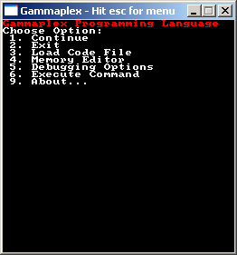
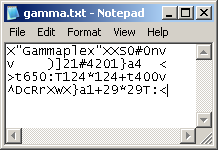
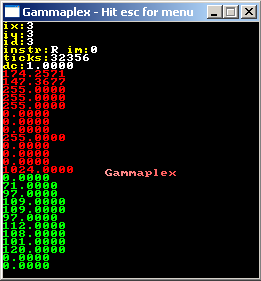
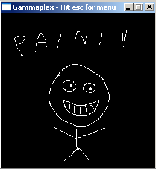
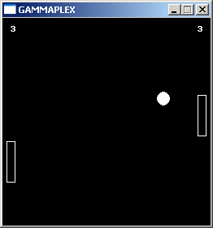

The Gammaplex programming language is an esoteric programming
language that, unlike most esoteric programming languages, has graphical output
and mouse input. It also has much more commands. Unlike some esoteric programming
languages, Gammaplex doesn't try to be obfuscated or hard to use. But that doesn't
make it un-esoteric, on the contrary!
Like many esoteric programming languages, inspired by Befunge, gammaplex has
a 2-dimensional instruction array, and the instruction pointer can move in the
directions North, East, South or East. It's also Turing complete (if it would
have an infinite instruction array). Every instruction is a single character.
The gammaplex interpreter (available both for Windows and Linux), it's source
code, and a few examples are available to downloadhere. The interpreter is written in C++ and uses SDL.
This section explains how to use the official Gammaplex interpreter to run
your code files.
The interpreter uses SDL, a multiplatform library for multimedia, so you need
the newest SDL.DLL (included in the zip) for Windows, or install SDL in your
Linux if you're using Linux.
If you start the interpreter, it'll try to load the code file "gamma.txt",
and if it doesn't find that file, load an empty program and allow you to load
another file by going to the menu. You can also let the interpreter start with
another file, if you start it from a console and give the filename as parameter.
For example, if you want it to use the file "sierpinski.txt" in Windows,
start gammaplex with "gammaplex.exe sierpinski.txt" from the console.
To exit the interpreter, press the "close" button of the window (always works)
or press escape and then press 2 (only works if the program isn't in "sleep"
mode)
The Linux version of the interpreter is included in the same .zip file that contains the windows executable,
and is called "gammaplex" without file extension. To make sure the program can open files relative to it's
program path, open it from a console with "./gammaplex" while being in the folder of gammaplex.
If you press escape in the interpreter, a menu will show up. To choose one
of the options, simply press the number of the option on your keyboard. You
have the following options:
1. Continue: will go back to the program
2. Exit: quits the interpreter (you can also press the close button with
the mouse for this)
3. Load Code File: this option will ask you to type in the filename of the
code file you want to load. The code file path is relative to the interpreter
executable.
4. Memory Editor: allows you to edit instructions, register and stack values,
etc... See below for more help on this.
5. Debugging Options: allows you to set the debug mode
6. Execute Command: allows you to execute a single command that you type.
It executes that command and thus changes the program state, but doesn't move
the IP (unless the command itself moves the IP of course). You can choose
if you want to enter the command as a character (press a single key on the
keyboard) or number (type in the ascii value of the command). When entering
commands as a character, type E to stop the command entering mode (shift +
e).
9. About...: shows version number of the interpreter and language
The "Memory Editor" options are the following:
0. Continue: don't do anything, continue the program
1. Show Info: shows instruction array width (iw), instruction array height
(ih), instruction pointer position (ix and iy) and direction (id).
2. Modify Register: allows you to change a value of any of the registers:
first type the address, then the new value.
3. Pop Stack: pops the top value off the stack
4. Push Stack: pushes a value to the stack, it'll ask you to type in the
number (you can type floating point numbers but you only see the point if
you place something non zero behind the point)
5. Modify Instruction: allows you to modify an instruction: first asks x
and y coordinate (0, 0 is the top left one), then asks the new instruction
value.
6. Modify Instruction Array: allows you to change the width and height of
the instruction array
7. Modify IP: allows you to change x and y coordinate and direction of the
Instruction Pointer. For the direction, 0 = north, 1 = east, 2 = south, 3
= west.
Note that the menu might look messed up if the screen is smaller than 256x256
pixels because there isn't enough space for all the text.

Note: input always uses the american keyboard layout,
because it's SDL's default.
How to make Code Files
The code file has to be a plain text file, interpreted as a 2D grid of characters.
Every line has to be exactly as long. The width of the first line determinates
the width of the instruction array, and the number of lines determinates the
height of the instruction array.
Do make sure that every line of the text file is as long! The interpreter ignores
endline characters and assumes every line is as long as the first line. The
first line has to be terminated with any ascii character smaller than 32 (so
an "enter" will do), after that it simply reads all the other characters of
the file, ignoring values smaller than 32, and adds them to the instruction
array with the width given by the length of the first line. It doesn't matter
what ascii code(s) your text editor uses for "enter".
Every instruction is a single character with an ascii value higher than 31 and
smaller than 128. A list of each instruction follows below. The program will
start with the top left character (0, 0), or at the last '@' character in the
file.
Here's an example of a codefile, edited in Notepad. See further inthis document
for more examples:

The Debug Modes
There are 4 debug modes in the interpreter:
0: no debug enabled
1: prints the info described bolow to the screen
2: prints the info described below to the screen, AND refreshes the screen
so that you can actually see the printed info
3: does the above, AND pauses after EVERY SINGLE COMMAND, you have to press
a key each time to execute the next one
The 'U' command cycles between these modes, and initially it's 0. With 'XU'
you can set it back to 0.
You can also set the debug mode by pressing escape, then 5, then the number
of the debug mode.
It prints the following info:
In White:
ix: instruction pointer x coordinate (leftmost characters of the code have
x coordinate 0)
iy: instruction pointer y coordinate (top line of the code has y coordinate
0)
Register 0 to register 12 (i.e. the 13 named registers, the top 2 red values
are "position A", the bottom red value is "style", etc...)
In Green:
The top 12 stack values (the topmost one printed is also the top of the
stack)
This screenshot contains an example of the enabled debugging mode:

The Gammaplex Virtual Machine
Gammaplex allows you to use both a stack and random access memory to store
your variables. The random access memory units are called registers.
The official version of Gammaplex puts some memory limitations. Gammaplex has
1048576 registers and a stack of 1048576 values. All of those are floating point
numbers. If a certain parameter or calculation requires integers, it converts
it to integer, then does the calculation, then converts it back to float (for
example for the '&' binary AND command). The first 16 register values are
the parameters for some functions. These are the named registers:
register[0]: x
register[1]: y
register[2]: R
register[3]: G
register[4]: B
register[5]: radius
register[6]: x2
register[7]: y2
register[8]: R2
register[9]: G2
register[10]: B2
register[11]: transparency (0 = opaque, 128 = semitransparent, 255 = invisible);
note that this is the opposite of "opacity" where 0 means invisible
and 255 means opaque.
register[12]: style
Registers [0] and [1] together form "position A"
Registers [6] and [7] together form "position B"
Registers [2], [3] and [4] together form "color", and is set to 255, 255, 255
by default at the start
Registers[8], [9] and [10] together form "color2"
The first 8 registers are used as input and output for functions like C (circle,
uses x, y as position, radius as radius, and RGB as color), etc... The next
5 registers are used for the graphics styles. The other registers can be used
as memory, but the stack can be used for that as well.
Please don't use registers up to register[15] for your own variables, they might
get a meaning later.
The stack is a typical LIFO stack: you push() values on top of it, and pop()
values again from the top. The stack is for example used for mathematical functions,
for example to add two values: push the first value on the stack, then push
the second value from the stack, then use the "+" command, and the two top values
will be popped from the stack (i.e. they're removed from it), and their sum
is added to the stack again.
Here's a full list of all parameters of the virtual machine:
Register[1048576]
The random access memory of Gammaplex. This
memory consists out of 1048576 floating point registers. The first 16 are
the named registers and are used as parameters for some standard functions.
Stack[1048576]
The stack memory of Gammaplex. This is a
LIFO stack containing up to 1048576 floating piont values. The stack used
for math and such. It wraps around, so if you filled the stack with 1048576
values, and add a new one, the oldest one is overwritten. However it's safer
not to assume this wrap around if you want to support possible versions
with other amounts.
Instruction[1024][1024]
You can have maximum 1024x1024 instructions.
Each instruction is a character (8 bit) with an ascii code between 31 and
128. Instruction array size is smaller if your code file is smaller.
IP (IX, IY)
The instruction pointer: where in the instruction
array we currently are (IX coordinate is horizontal, IY coordinate vertical
position in the array).
ID
Instruction Pointer Direction: 0 = north,
1 = east, 2 = south, 3 = west, this is the direction the IP is moving to.
If it reaches a side, it "teleports" to the other side (wraps
around). The initial direction is EAST. Some commands allow you to change
the IP direction.
SP
Stack Pointer. This is used internally to
handle the stack.
RP
Register Pointer: this points to a position
in the random access memory. It is the address of the register you're currently
reading from / writing to. The string *RP refers to the value of the register
this RP is pointing to.
DC
Decimal Counter: used for entering decimal
numbers.
debugMode
The type of debug mode the interpreter is
using, if it supports debug modes. In the official interpreter are 4 debugmodes.
gosubx[1024], gosuby[1024], gosubd[1024]
Used internally for GOSUB and RETURN: contains
the up to 1024 last locations of the IP, including direction. If you jump
more than 1024 times with a GOSUB, the interpreter will forget the oldest
location.
GP
Gosub Pointer. This is used internally.
instructionMode
This is used internally by the official implementation
of the interpreter. While the intruction pointer travels through instructions,
it gives a meaning to each single character instruction based on the instructionMode.
0 = normal instructions, 1 = extended instruction (after an 'X' command),
2 = string mode, 3 = string command: command after using " in string
mode.
anchorTime
Minimum time between two anchors in milliseconds,
can be set with 'Xj'
lastAnchorTime
Time at previous anchor or program begin,
used internally
stackProgram[16]
The up to 16 registers that are part of a
"stack program" that allows you to automaticly push and pop a
whole set of registers to the stack. Change with 'a' or 'A'. Push and pop
these registers in order with { and }.
numStackProgram
Number of registers in current stack program.
Change with 'a' or 'A'.
screenBuffer[1600 * 1200];
The pixels of the graphical window, maximum
resolution is 1600 x 1200 pixels. Debugging and menu text are not drawn
to the screenBuffer but directly to the screen, all other texts printed
by your code are.
Unless mentioned otherwise, all the parameters of the virtual machine are set
to 0 at start. An exception is color A which is set to white, and the IP which
is set to the location of the last '@' in your code if there is one.
The Instructions
Basic Instructions
The Gammaplex programming language has a lot of official instructions. Each
instruction is a single ascii character, that the IP will read while traveling
through the text file containing the instructions. The history of these instructions
is a bit messy. As a result, the set of inctructions contains some inconsistensies
here and there. Effort was made to give each instruction an as memorable character
as possible.
Instructions are case sensitive! Each instruction has an ascii value between
31 and 128.
In the table of inctructions, "pop" means: the top stack value is
read, and removed. "pop, pop", means that two parameters from the stack are
used, each pop is a different value. For example this explains how to read the
explanation of the '?' command.
Basic Instructions
u
117
increment RP. This changes which
register value you're currently writing to, when a program starts, RP is
set to 0. You can increment it to higher values to store variables inother
memory addresses.
d
100
decrement RP
?
63
Serves as condition: If pop is
not zero, the IP continues normally. If it is zero, jump over the next command
as if the'?' were a ';'. So the command immediatly after the '?' is only
executed if the popped value is "true", i.e. non zero.
/
47
rotate ID (IP direction), as
if it bounces on a 45° wall
\
92
rotate ID (IP direction), as
if it bounces on a 45° wall
^
94
set ID to North (0)
>
62
set ID to East (1)
v
118
set ID to South (2)
<
60
set ID to West (3)
G
71
serves as "GOTO": IX = pop, IY
= pop, top left corner has position (0, 0). The new position is the command
executed next time. The IP direction remains the same as it was.
g
103
store current IP position: push
IY, push IX
@
64
start here. If there is no @,
it'll start at position (0, 0), this start position (0, 0) is then the first
command executed, if there's an @ that @ is the first command executed (but
executing @ does nothing). If there are multiple, it'll start at the last
one. If it encounters one while running the code, it ignores it.
32
(space): NOP, do nothing. It'll
also keep the DC at what it is, this means that spaces between decimal numbers
are completely ignored.
#
35
NOP, do nothing. Unlike the other
NOP command, it sets the DC back to 1, like most instructions automaticly
do.
;
59
jump over the next command, this
means the IP will move two steps at once and ignore the next command.
E
69
end: this instruction traps the
IP forever: it always makes the IP move back, while the program flow makes
it automaticly move forward again, causing an infinite loop.
e
101
sleep: the program halts until
you press any key
j
106
time anchor: will wait until
time since previous time anchor (or if none, program start) is the set time
(default: 50ms, change with Xj). Not very precise, but handy to limit the
speed of games on too fast computers.
(
40
put *RP on the stack (this means,
put the register RP is pointing at on the stack)
)
41
pop *RP from the stack
[
91
put RP on the stack (NOT the
value in the register, but the register pointer itself)
]
93
pop RP from the stack
{
123
push stack program. A stack program
is a series of registers that you can choose to be put on the stack all
at once with this single command.
}
125
pop stack program
a
97
set stack program preset (and
pop program number from stack): 0 = none, 1 = pos A, 2 = pos B, 3 = color
1, 4 = color 2, 5 = reg[0]_to_reg[7], 6 = reg[0]_to_reg[12]
A
65
set stack program advanced: up
to 16 addresses, pop number of adresses (n), then pop the n addresses. This
way you can choose which addresses are pushed and popped by { and }
D
68
delete current stack value: pop
from the stack and do nothing with the value. The next newest stack value
is now on top.
w
119
duplicate current stack value
(pop, push, push).
W
87
duplicate the last two stack
values (x y becomes x y x y)
Y
89
duplicate the last pop values.
For example if the stack contains, from oldest to newest, "1, 4, 2,
3", the last 3 values below the 3 will be duplicated, so the stack
now contains "1, 4, 2, 1, 4, 2"
s
115
swap the two topmost stack values.
S
83
swap the topmost with the third
highest stack value (i.e. swap s and s - 2 if s represents the topmost value)
$
36
swap s and s - pop. So if the
stack contains from oldest to newest, "1, 2, 3, 4, 3", it'll swap
the values "4" and the one 3 older than 4, in this case "1",
so the stack will now contain "4, 2, 3, 1".
z
122
rolldown s - 2. This will take
the third oldest value out of the stack and then push it to the top.
Z
90
rolldown s - pop. This will take
the "pop" oldest value out of the stack and then push it to the
top.
+
43
Add.
This command, like most of the following mathematical commands, works with
the stack: it removes the input values from the stack, and pushes the output
again on the stack. If the stack contains "x, y, z" where z is the newest
(topmost) value, after using "+", it'll contain "x, y+z", in other words
it does push(pop + pop).
-
45
Subtract. The first popped value
is substracted from the second popped one. (so the second pushed is substracted
from the first pushed, which is the most intuitive way)
*
42
Multiply
:
58
Divide. The first popped value
is divided through the second popped one.
~
126
Power. The first popped value
is raised to the second popped one.
V
86
Square Root of topmost stack
value.
T
84
Cosine of topmost stack value.
p
112
Push pi (3.14159...).
%
37
Modulo Division. It'll automaticly
convert the values to integer, make sure the second one is larger than 1
(if it isn't, it'll use 1), and after taking the modulo, converts back to
float and pushes the result to the stack.
&
38
Binary AND
|
124
Binary OR
x
120
Binary XOR
!
33
Logical NOT. Sets topmost stack
value to 0 if it's non-zero, or to 1 if it's zero.
_
95
Negate the topmost stack value.
"
34
Increment (++)
'
39
Decrement (--)
N
78
set last stack value to 0
0
48
decimal 0. This is one of the
decimal commands, more details about these commands can be found in the
"Decimal Numbers" chapter of this manual.
1
49
decimal 1
2
50
decimal 2
3
51
decimal 3
4
52
decimal 4
5
53
decimal 5
6
54
decimal 6
7
55
decimal 7
8
56
decimal 8
9
57
decimal 9
.
46
decimal point. Sets DC to 0.1
=
61
pop and compare last two stack
values, if they're equal, pushes 1, else pushes 0
,
44
if pop is smaller than pop, push
1, else push 0. Note the order: first value popped smaller than second value
popped means: first value pushed larger than second value pushed.
t
116
push the time to the stack in
milliseconds since the program started
o
111
round: remove that what's behind
the point of the top stack value, take the integer part
k
107
random: either put 0 or 1 to
the stack, 50% chance each
K
75
random: put a random floating
point number between 0 and 1 on the stack, uniform distrubution
n
110
push 255 to the stack, 255 is
an often needed value.
l
108
change screen resolution to x,
y (x and y are the first and second named registers). The default resolution
when the program starts is 256x256.
P
80
put pixel at x, y with color
R, G, B, where x, y, R, G and B are all read from the named registers.
r
114
print character popped from the
stack at position x, y with color R, G, B. Uses the ascii charset. Position
x, y is in pixel coordinates, not letter coordinates. After printing the
character, it'll automaticly increment x with 8, or set x to x%8 and increment
y with 8 if the side of the screen was reached, or set y to y%8 if the bottom
of the screen was reached. In other words, you can print series of characters
without having to care about the coordinates.
i
105
Prints the value popped from
the stack as integer. Will not automaticly increment x, but will push the
number of characters printed to the stack. If you don't need that value,
delete it from the stack after using this command.
f
102
Prints the floating point number
popped from the stack.Will not automaticly increment x, but will push the
number of characters printed to the stack. If you don't need that value,
delete it from the stack after using this command.
C
67
draw non filled circle at x,
y with radius radius and color R, G, B
F
70
filled circle
L
76
line from x, y to x2, y2, with
color R, G, B. A line is automaticly clipped to the screen.
B
66
Box (rectangle) from x, y, to
x2, y2 with color R, G, B
H
72
HSV to RGB color: reads highest
3 stack values as "HSV" color, and pops them as R, G and B on the stack
again. Color coordinates are values between 0 and 256.
R
82
redraw the screen. This has to
be done to make any new pixels, lines, circles, etc... visible. To speed
up your graphics, don't use this command after every single pixel you draw,
but only after drawing all pixels of a frame. Redrawing the screen is slow
but necessary.
c
99
cls: clear the screen to black.
You can only see the effect of cls after redrawing the screen again, and
you have to use it if you want old pixels to be removed again without overwriting
them individually.
h
104
push "height of screen - 1" on
the stack.
y
79
push "width of screen - 1" on
the stack.
I
73
input a character: program pauses,
allows you to type a single character and then continues. The typing cursor
is drawn at location is x, y. This command also pops a value from the stack
to choose a message behind which you can type your character:
0=nothing, 1=">", 2="]", 3="enter char:",
4="please enter a character:", 5="enter key:", 6="please
enter a key:"
J
74
input a number program pauses, allows you to type a single number and
then continues. The typing cursor is drawn at location is x, y. This command
also pops a value from the stack to choose a message behind which you
can type your character:
0=nothing, 1=">", 2="]", 3="enter number:",
4="please enter a number:", 5="enter value:", 6="please
enter a value:"
Note: you can type floating point numbers. In the current official implementation
of the interpreter, the point may only show up after there actually is
something non-zero behind the point though.
M
77
push mouse position Y and X to
the stack. The mouse position is given in pixel coordinates, relative to
the top left corner.
m
109
push "right mouse button
pressed", "left mouse button pressed" to the stack as boolean
values. For example if the right mouse button is pressed and the left mouse
button isn't, the values 1 and 0 will be popped to the stack.
U
85
toggle DEBUG mode. This is a
deprecated command since the user is supposed to be able to choose a debug
mode in the options of the interepreter instead of using a program command.
q
113
Get Instruction (x = pop, y =
pop) and push it. Instruction number pushed is the ascii value of the character
of the instruction. This command is useful for reading code for self modifying
programs, and to put blocks of data in your code. For example if you make
a game and want it to have a level of 64x64 squares where each square represents
one of 256 tiles, you can put the level directly in the code as a 64x64
matrix and read from it with q.
Q
81
Self modifying code: set instrucion
at instruction position x=pop, y=pop to pop. Push, in this order, the instruction
value, the y position and the x position, to the stack before using this
command.
X
88
Extended instruction: indicates
the next character in the code is to be interpreted as an extended instruction.
b
98
Reserved for plugin commands:
there exist no plugin commands yet, but b is reserved for that.
Extended
Instructions
Because there are more instructions than there are possible ascii values between
31 and 128, not all instructions can be a single character. Extended instructions
are placed after the X command.
Some instructions are interpreted as basic after an X, here are some rules
about extended instructions:
The following commands behind an X do the same as when they're not behind
an X and make the next command not-extended: #
The following commands behind an X do the same as when they're not behind
an X, but make the next command extended as if that one was placed after an
'X': v, ^, <, >, /, \, (space), @
The official extended commands is given in the table below.
There exist String commands, placed after a " in a string.
Non existing extended instructions after an X are ignored, but might be
used later if new features are added so please never use an unused extended
instruction as NOP.
X;
Jump over two commands at once
(e.g. to jump over an extended command)
X?
Works like '?', but will jump
two commands at once (e.g. to jump over an extended command)
X"
Open String. How strings work
is explained in the "Strings" chapter of this manual.
"X
Close String
XU
sets debug mode back to 0. This
is a deprecated command since the user is supposed to be able to choose
a debug mode in the options of the interepreter instead of using a program
command.
XG
GOSUB: works like GOTO, but stores
the current position in the gosub array. This allows you to make sub sections
in your code that can be called at any time, and after which you can return
to the original location in your program.
Xg
RETURN: Jumps back to last GOSUB command. The IP will also get the direction
it had back then. It'll execute the next instruction after the old gosub
command, not the gosub itself anymore, that'd be pretty useless.
Xj
Set the anchor time for time
anchors.
XI
Input a string: program pauses, allows you to type a string and then
continues. The typing cursor is drawn at location is x, y. This command
also pops a value from the stack to choose a message behind which you
can type your character:
0=nothing, 1=">", 2="]", 3="enter text:",
4="please enter text:", 5="enter string:", 6="please
enter string:", 7 = "enter name:", 8 = "enter filename:",
9 = "enter command:"
Max string length 256. String pushed to the stack with 0 termination
character and in such an order that when using Xr to print it, it looks
correct and not mirrored.
XH
RGB to HSV: the inverse functin
of 'H'
XX
Reserved for extended extended
instructions, would it ever be needed.
Xs
Mirror last pop stack values
XS
Mirror string on stack: mirror
all values until first zero or > 255 value in stack, where a zero or
character > 255 represent the termination character of the string.
Xw
Duplicate string, and put '0'
character between old and new string.
Xr
Print String. String in stack
has to be terminated with a value <= 0 or > 255, first letter printed
is first popped value, the terminatino character is popped too but not drawn
(since it isn't a char).
XP
Get pixel (as opposed to 'P'
which sets a pixel): push color of pixel (x, y) to color A.
XT
Trigonometry: This command can do trigonometric and hyperbolic functions
and their inverses, plus a few extra mathematical functions. The full
functionality of this command is given in the "Trigonometry"
chapter of the manual.
Decimal Numbers
You can easily type decimal numbers in your code, these
will be pushed to the stack. Each character of the decimal number is actually
a command, and the commands are designed so that you can type them normally.
It works as follows:
To be able to do this, a Decimal Counter is used, which
is initially 1. Any command, except the ones in the following list, sets
the DC back to 1:
0123456789.\/@; <>^v
Please note that "space" is also in that list, while '#' is not, so '#' can
be used to separate two decimal numbers, while space, 'v', ... can be used to
continue typing the decimal number.
The decimal number commands (0-9) do the following:
If DC is equal to 1, push n to the stack (i.e. create a new value on the
stack, rather than modifying an existing one), and set DC to 0
If DC is 0, it multiplies the top stack value with 10, and adds n to it
(e.g. if the value on the stack was 5, and now you do the command '4', the
value on the stack becomes 54)
If DC is not 0 and not 1 but something between those, it adds DC * n to
the top stack value, and then divide DC through 10. For example if DC is 0.1,
and the top stack value is 54, and you do the command '8', the top stack value
will now become 54.8, and the DC will become 0.01.
So the DC is equal to 0 when pushing digits before the point, and is 0.1, 0.01,
... when pushing digits after the point. It's 1 when not pushing any digits.
The '.' or decimal point command will set the DC to 0.1, and if DC was 1 (i.e.
you used a point as initial digit of the number, like .445), will push a zero
to the stack (this is the zero before the point and creates your new value you're
entering). For example if you want to push "256.23" to the stack, you have to
give the following commands in the following order, this is the same order as
when you normally write down a decimal number:
256.23
That is, if the IP is moving to the east. If the
IP is going in another direction, you have to type the commands in the other
direction, for example if it goes to the west, to add 256.23, you have to type
32.652 in your code instead.
To add two values to the stack, 256.23 and 255, use for example
256.23#255
The # command sets the DC back to 1 so that the next
decimal command will push a new value to the stack. With a space: 256.23
552, you will NOT be adding two values to the stack,
but only one value namely 256.23552, because space is in the list of commands
that doesn't set the DC back to 1.
You can output (print) numbers to the screen with 'i' or 'f'.
Trigonometry
The 'XT' command can do trigonometric and hyperbolic functions and their inverses,
plus a few extra mathematical functions.
First, XT pops a value from the stack that represents which function it
has to do.
Then, it pops a second value from the stack, called "u" here,
which is the value it'll perform the calculation on.
A few functions, which have a number higher than 63, take 2 arguments and
thus pop a third value, "v" (the second parameter for the function).
After performing the calculation, it pushes the result.
Here are the numbers of the functions it can perform:
0. 0: the zero function
1. sin(u): sine
2. cos(u): cosine
3. tan(u): tangent
4. sec(u): secant
5. csc(u): cosecant
6. cot(u): cotangent
7. asin(u): inverse sine
8. acos(u): inverse cosine
9. atan(u): inverse tangent
10. asec(u): inverse secant
11. acsc(u): inverse cosecant
12. acot(u): inverse cotangent
13. sinh(u): hyperbolic sine
14. cosh(u): hyperbolic cosine
15. tanh(u): hyperbolic tangent
16. sech(u): hyperbolic secant
17. csch(u): hyperbolic cosecant
18. coth(u): hyperbolic cotangent
19. asinh(u): inverse hyperbolic sine
20. acosh(u): inverse hyperbolic cosine
21. atanh(u): inverse hyperbolic tangent
22. asech(u): inverse hyperbolic secant
23. acsch(u): inverse hyperbolic cosecant
24. acoth(u): inverse hyperbolic cotangent
25. exp(u): exponential: e^u
26. ln(u): natural logarithm (base e)
27. exp(-(u * u)): standard normal distribution
28. sign(u): returns -1, 0 or 1 (the sign of u)
64. atan2(v, u): computes the principal value of the arc tangent of v/u, using the signs of both arguments to determine the quadrant of the return value
65. log_u(v): base u logarithm of v, that is: ln(v)/ln(u)
For example to put the hyperbolic secant of 0.5 on the stack, use 0.5#16XT
Strings
With the instruction X" (extended ") you can make strings in your
code. When in string mode, every character the pointer walks over will be pushed
as an ascii value to the stack instead of executed. A string starts with X"
and ends with "X. The end-X doesn't make the next character extended. To push
a " symbol to the stack, use "".
Inside a string, you can still execute commands, if you put the command after
a " character. Such a command inside a string is called a string command.
There are only a few commands that work as a string command. The following commands
are enabled as string command and do the same as what they do as normal command:
"> "v "< "^ "\ "/ "; "(space) "# "@ "+ "- "* ":
The following string commands do something different:
"X: end the string
"": push a " character to the stack
"2: the next two characters will be executed as normal command, so this
command is used to extend the lifespan of the string command mode, e.g. if you
need to go through a few 'v', '<', etc...
Other string commands do nothing in this version of Gammaplex.
For example:
0X"""hell";+o world"""XXS
Will first push a 0 to the stack, this is the string termination character.
Then it'll push the following characters to the stack: '"' 'h' 'e' 'l' 'l' 'o'
' ' 'w' 'o' 'r' 'l' 'd' '"'. The ';' character is executed as a command to jump
over the '+'. The '+' is never executed and never pushed to the stack. After
pushing the string, it'll mirror it with 'XS', because when pushing a string
to the stack this way the topmost character of the stack is the last character
of the string, which'll make it being printed the wrong way (mirrored).
Graphical Styles
Graphical shapes are drawn with the positions and color of the named registers.
With the extended style registers you can enable more drawing options.
R2, G2 and B2 together form a second color used for some styles.
Transparency is the transparency value used if the transparency style is enabled.
Transparency 0 means no transparency (opaque), 128 means semi transparent (50%),
255 means 100% transparent (invisible). You cna also pick any value in between.
Style, register[10], is used to enable the special styles. Style is a binary
number where each bit enables or disables a different style option. The sum
of the numbers of the following options is the style value to have these options
enabled:
0: no special style.
1: enable transparency (using register[11] for transparency value)
2: multiply blending
4: make underlying pixels negative color (effect visible if transparency
or blending is used)
8: do not draw over pixels with color2
16: only draw over pixels with color2
32: pattern 1: 50% dots
64: pattern 2: less dots
128: pattern 3: horizontal lines =
256: pattern 4: vertical lines |||||
512: invert pattern: transparent pixels are now filled ones and vica versa
1024: horizontal gradient
2048: vertical gradient
4096: enable background color for text (color2 is used for the background)
(with gradient: background does opposite gradient)
Transparency and multiply blending together make "mysterious blending".
"do not draw" and "only draw" together form "draw
with (color1 + color2)/2 over color2, draw normally over the rest"
Horizontal and vertical gradient together make 45° gradient. The gradient
is from one side of the screen to the other side, and uses color1 and color2.
"only draw" and "do not draw" are disabled when gradient
is enabled.
Dot and stripe patterns mixed form dotted line patterns (the combination of
all removed pixels).
Examples
Most of these examples are included with the official interpreter as text files.
Hello World
X"Hello World!"XXSXrRE
First, the string "Hello World!" is pushed to the stack, then
it's mirrored with 'XS' so that it'll be in the correct order for printing
it, it's printed with 'Xr', and then finally the screen is redrawn with
'R' so that you can actually see the text pixels that are drawn. The color
of the text is white because that's the default value for the color registers.
At the end of the program, the instruction pointer is trapped with the
infinite loop 'E' ('E' does the same as '><' would do).
Hello World 2
The previous example was a very simple hello world program, here's another
one. It pushes the Hello World characters separately with their ascii
values. The code of the program has a special shape, using the 2D properties
of code files, and the direction of the instruction pointer is guided
through the whole program until it reaches the end.
@v > r108wv # > r100rv 2 1 # # 8 # >v 5 0 # # 0 # R 5 1 # # 1 # v ####### v11rr< # r # ^ w r 1 # 4 # # w 2 r # 1 # # K 7 3 # 1 # # > ^ >2r119 r111r ^###### #####
Gammaplex Demo
This little program is included in the file gamma.txt and is the code
loaded by default by the interpreter if you don't instruct it to load
another file. It shows bouncing text "Gammaplex" with a gradient,
the bouncing effect uses the time for it's animation.
X"Gammaplex"XXS0#0nv v )]21#4201}a4 < >t650:T124*124+t400v ^DcRrXwX}a1+29*29T:<
This code is more complex and contains loops.
First, the text "Gammaplex" is pushed to the stack and then
mirrored with 'XS' (because it's mirrored on the stack due to the way
it's pushed). Then color2 is set to (255, 0, 0)=red with the commands
'0#0n4a}' ('n' pushes 255 to the stack, '4a}' sets the last 3 stack values
to the color2 registers). Then, style (register 12) is set to 1024, which
means horizontal gradient will be enabled. Color1 is already white automaticly
at program start, so it's a horizontal white-red gradient.
Then, the loop starts. First, the loop sets y to 124 + 124 * cos(time/650),
and then x to 92 + 92 * cos(time/400). These are coordinates that will
always be inside the screen, 92*2 is the rightmost position of the text
"Gammaplex" so that the "x" will be at the right side
of the screen. These coordinates are set to the position A registers (the
position the text will be printed at) with '1a}'. Then, first the Gammaplex
text is duplicated in the stack with 'Xw' so that it can be used in the
next loop again, and then printed with 'Xr' (this pops the text again).
Finally, the screen is redrawn with 'R' and cleared with 'c', and the
string termination zero is popped with 'D', so that for the next loop
the duplicated text is available with the "G" on top of the
stack. Then the whole loop starts again, forever.
You can change the animation speed by changing the values 650 and 400.
The time is in milliseconds, and these animation speed parameters are
what you divide this time through.
The path the "Gammaplex" text follows on the screen is a lissajous
shape by the way.
Sierpinski
Draws a sierpinsky triangle at a screen of resolution 512x512
Here's a screenshot of this program while it is still busy drawing the
triangle:
This program goes quite slow because it has to do the inner loop 262144
times, thereby checking all possible commands all the time and executing
them. This program can be seen as a benchmark how slow or fast the current
version of the interpreter is.
Painting program
Draws white lines between the current mouse position
and the previous one if you press the left mouse button. If you press the
right mouse button, it'll clear the screen.
@uu v >{2a}Mv avm}a1< 1>; v ^Rc?L?<
There's a single loop in this program, this loop is contained in all
lines except the first one, and follows the v, >, < and ^ symbols
all the time. The loop contains two conditions:one for left and one for
right mouse button, which is why the condition are behind the 'm' command.
The loop also uses the presets for position A and position B of stack
programs to push and pop those, for drawing the lines.
Here's a screenshot:

Beefed-up painting program by Torkel:
@uuuu 2a} v > R v w821< ^v?v?mL}a\0wwddv 1 M } ? ^ <vu)< a; ; >)u)u)^>)uv ^2M< ^ddww552L)< ^>;v;<>1a{2a}M1v v }a< >m?v v >c^^;? < ^ Rc?L<
Right and left mouse button clears screen,
Right mouse button cycles between line and freehand mode, [a bit buggy
appearantly ;)]
Left puts a line in line mode and draws in freehand mode.
Pong game by Tron3k:

Move your paddle (the one on the left side) with the mouse (it has a limited
speed), the ball bounces on the edge of the paddle but will go through
the paddle's sides so beware! You play against the computer AI.
This is a very nice achievement, the first game made in Gammaplex. I
tried figuring out how it works but didn't get far.
Polyglot by Marinus Oosters:
This is a polyglot that works in quite a lot of languages, including
Gammaplex. It prints HI.
#define print(x) main(){printf(x);return 0;} /* >+++++[<++>-]<[>++++
# +++<-]>++.+.[-]>+++++[<++>-]<.[-][
#
# This polyglot prints "HI" when run in
# Brainfuck, C, COW, Perl, Python, Gammaplex, l33t, and ruby
#
# */
print ("HI\n")
#/*
# @X"H"Xr X"I"Xr RE
# moOMoOMoOMoOMoOMoOMOOmOoMoOMoOmoOMOomoo
# mOoMOOmoOMoOMoOMoOMoOMoOMoOMoOmOoMOomoo
# moOMoOMoOMooMoOMooMOOMOomoomoOMoOMoOMoO
# MoOMoOMOOmOoMoOMoOmoOMOomoomOoMooMOOMOo
# moo 5 0 7 99999998 1 7 0 1 8 9999995 1 91
# ] */
Have fun designing your own programs, and mail me the results if you like. Contact
information can be found at the bottom of this page.
Tips
When using GOTO and GOSUB, use at least 3 digits for the coordinates, even
if the coordinates have less digits, e.g. use 002#035 instead of 2#35 to give
the coordinates to go to: since you'll be messing with your code and thus changing
positions a lot while designing, positions might change, so it's best to have
enough room to type possible bigger numbers for goto coordinates, and this also
allows you to spot them easier since they're more recognisable.
There are many shortcuts, for example you can use n instead of 255 to push
the often needed 255 to the stack, you can use "stack programs" to
push and pop named registers with less commands, and you can use "time
anchors" to automaticly limit the speed of loops.
Challenges
Some are very hard, others should be possible
Prime number calculator
Game Of Life
A quine (without using the 'q' command to read code of course, that would
be too easy)
An adventure game, either with parser or with single character input like
"n", "e", "s", "w", ...
Mandelbrot Set and/or Julia Set
Spinning 3D wireframe cube
Tic Tac Toe
A game like Tetris, 2D space shooter, snake, ...
Known Bugs
This is not a bug, but I've been unable to test if the keyboard layout used
for input is correct on an american keyboard. If you use an american keyboard,
please let me know if all characters, including shift characters (like '?')
work. You can for example test this by pressing escape, then 6, then 1, and
it'll ask you to press a character.
Contact Information
You can email me at the email address shown in the image below. I put it in
an image to prevent spam. If you can't read the image, you can also form the
address as follows: my first name at my family name dot net. The name can be
found in the copyright message at the bottom.
You can enter messages in this Tag-board, if it isn't down: